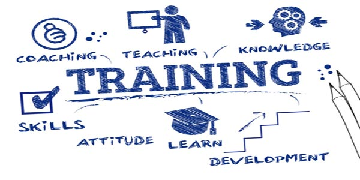

ASK... Attitude Skills Knowledge...
These are the three basic pillars on which any individual's career is built. And these three pillars are called to service at every turns & twists in the career path, whether it is joining a new career, promotion, transfer to a new department or job change. At each of these points (we call them the HOTSPOTS), the above three pillars take the maximum load. And each individual has to make sure that these pillars of Attitude, Skills & Knowledge are regularly updated and strengthened, to takes these load.
ASK Training Consultants specialise in providing this service of strengthening each of these pillars, based on the requirements of the individuals or the organization. We specialize in Soft Skill Training.

However, we believe that delivering a training program is just a part of the package that any organization looks for. We prefer to go through the whole process of Skill Enhancement, starting from Training Need Analysis to Creating a Session Package, updating the stakeholders about the expected outcome of the training intervention, Conducting the actual training intervention and finally checking out the outcome of the training to check whether the learning are being implemented in the actual work environment by the participants. This would be followed by another similar cycle for any other needs.
Below are some of our specialties and process touch points.
Back to TOP
Differerent roles require different skill sets. From the time that a student passes out from a Professional College to every time a promotion comes up, the required Skill Sets change. Unfortunately, most of these Soft Skills are not taught in any colleges, though most of them are trainable.
The foundation for success is built on three pillars, namely Attitude, Skills and Knowledge. Knowledge tells us "What to Do", Skills directs us "How to Do" and finally Attitude explains "Why to Do"!! Attitude is the will to do something. Unless all these pillars are adequately strong, success will keep eluding us.
At every stage of our career, these three pillars need to be re-strengthened ! Each role requires a different skill-set. The changed location or situation could also affect the "will to do". Hence, these three pillars need constant fine-tuning and tweaking.
Back to TOP
These are the "Moments of Truth", where you are checked for your Skill Sets, and these "Moments of Truth" decide your future ! Are you prepared ?
Hotspots are those points of our career, where our Skills & Attitude are put to test. We need to be prepared for these "Moments of Truth". These are the points in our career where changes take place. A student joining his first job, moves from a world of theory to a world of practice. The corporate world expects a lot from him, which may be in the form of knowledge, skills or attitude. Such situations are also common when promotions take place, when a previous team member employee may suddenly be thrust into a role of a team leader.
Back to TOP
The application of these skills, knowledge & attitude is not based on any industry. These skills are applicable to any situation where human beings work together and interact... where they need to interact and perform as a team !
Each industry may have specific knowledge requirements and related technical skill-sets, which may be industry specific. However, Soft Skills and related knowledge are not industry specific. Any industry where human beings work "together" and need to "interact" need these Soft Skills. These could also include Social Skills, Interpersonal Skills, Communication Skills, Analytical Skills etc.. Gaining mastery over these areas will stand by us in any role, in whichever industry we choose to be a part of.
Back to TOP
Since the participants are adults, the methodology used are different from a College session. The training consists of Group Discussion, AV sessions, Activities, Games etc. along with lecture sessions.
Since all the participants are adults, and the focus is on Soft Skill training, the principles of andragogy take on importance. Adults come with their own experiences, related knowledge, skills and attitude. They have their own view point when interacting with the society. Hence the fundamental premise of the sessions should be that "No one is wrong... Everyone is right from their point of view". We follow this approach, and then help each participant to observe the same situation from a different point of view, so that their approach to each specific situation can change.
Back to TOP
Our Training Approach covers all the aspects of Training Need Analysis, Participant Skill Assessment, Actual Training Sessions, Support to Superiors for helping the participants put the learning into practice, and final feedback from the organization about the ROI into training.
The actual training deliver is just part of the process. The process begins with Training Need Analysis (TNA), through sessions with different line managers and departmental heads. We identify the need for training, and try to discover gaps in the participants. Based on these interventions, tailor-made programs are prepared to fulfill these needs. Before delivery, the line managers are exposed to the modules and their expected results.
After the delivery, feedbacks are taken from the line managers, to check the implementation of the learning by the participants in their actual work environment. If required, further interventions are planned.
Back to TOP
We do not believe that a Training Program is a stand-alone activity. Training is always a support activity, and hence is to be used as a tool to achieve corporate goals. Training for the sake of training will not help in any manner. Training has to be focused to fulfill a need that may arise withing the organisation.
We try to identify such needs through Training Need Analysis. We try to get feedback from the line managers and Management, about the gap symptoms that may be visible, which has prompted them look to training as a solution. We try to identify the present status of the participants through Psychometric tests and identify gaps. The training programs are designed to cover these existing gaps.
Care is taken to update the line managers and management about the need of the training, along with the effect the selected modules will have to fulfill these needs. It is to be noted that no training will be complete unless it is implemented by the participants. This implementation process will have to be hand-led by the respective line managers. Regular feedback will be taken from the line managers to check the level of implementation of the learnings. And finally, the organisation need to identify whether the training interention has resulted in the required behavioral changes in the participants, leading to better ROI.
Back to TOP
We make sure that there is total flexibility available to our clients, to decide on the type of solution required for their need. Pick and choose the various modules available, and develop your own personalized program, so that maximum benefit can be reaped !
We have a Booster Series, where all the Skill Trainings are put under different categories for easy identification. We can tailor-make the training programme by mix-n-match of different modules, as per the requirements based on the training need analysis. The programmes could be fine tuned according to the level of participant experience, though the module will be the same. The difference would be the depth to which the sessions would delve into, as per the participant maturity and levels.
Back to TOP